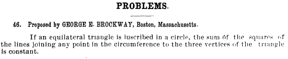
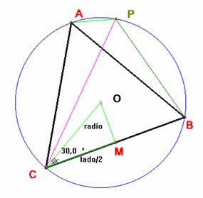

De
investigación.
Propuesto por Juan Bosco Romero Márquez, profesor colaborador de la
Universidad de Valladolid
Problema 282
2) Si un triángulo equilátero está
inscrito en una circunferencia, la suma de los cuadrados de los segmentos que
unen cualquier punto de la circunferencia a los tres vértices del triángulo es
constante.
Brockway,
G. E. (1895): American Mathematical Monthly, (Volumen
II, May) p. 158

Demostración de Saturnino Campo Ruiz, profesor del IES Fray Luis de León de Salamanca.
Para el
triángulo equilátero inscrito en la circunferencia se verifica
PC = PA + PB (1)
(visto
en otro problema de la revista), sin más que aplicar el teorema de Ptolomeo al
cuadrilátero inscrito PACB. Según
este teorema el producto de las
diagonales es igual a la suma de los productos de los lados opuestos, por
tanto:
PC·AB = PA·BC + PB·AC
Al ser AB=AC=BC, simplificando se obtiene la
relación (1).

Aplicando
al triángulo PAB el teorema del
coseno, teniendo en cuenta que el ángulo PAB
mide 120º, obtenemos:
(AB)2 = (PA)2 + (PB)2 - 2·PA·PB·cos120 = (PA)2 + (PB)2
+ PA·PB
(2)
Para la
suma de los cuadrados, aplicando primeramente (1)
(PA)2 + (PB)2
+ (PC)2 = (PA)2 + (PB)2
+ (PA + PB)2=2((PA)2 + (PB)2 + PA·PB)
y después (2)
(PA)2 + (PB)2 + (PC)2
= 2·(AB)2
Por tanto
la suma de los cuadrados de las distancias desde P a los vértices del triángulo equilátero es igual al doble del
cuadrado del lado de éste.
El lado del triángulo equilátero inscrito mide lado =AB =·r, donde r es el radio de la circunferencia circunscrita, como se deduce fácilmente de la observación del triángulo rectángulo OMC. El valor de la constante es 2·(AB)2 =2·(·r)2 = 6·r2.